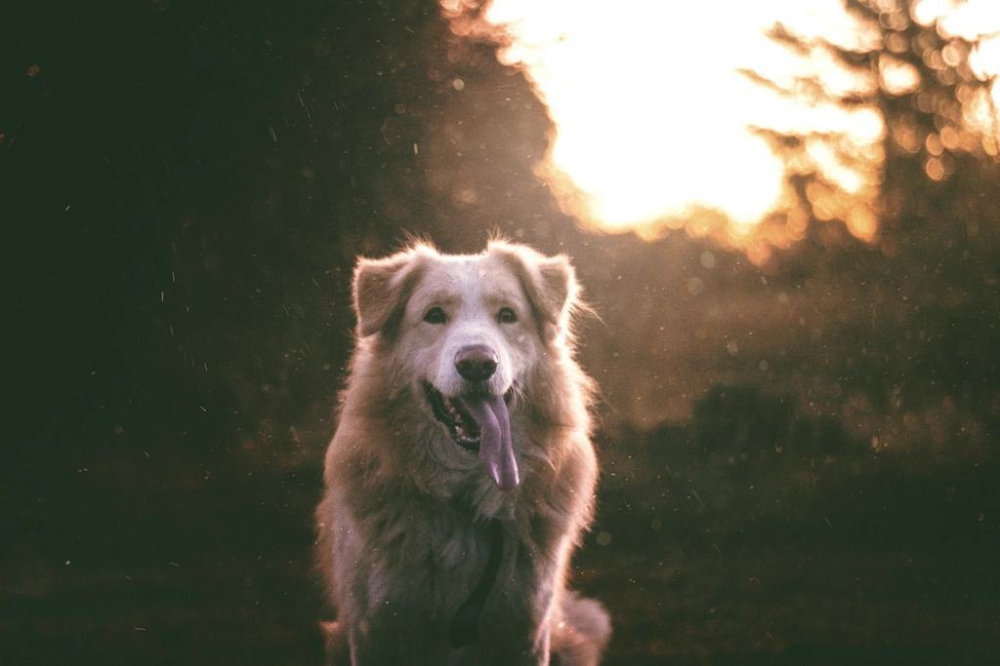

Om Stilla Tass
Stilla Tass startades 2020 av Therese Wallin, hundfrisör sedan 2009 och utbildad i lågstresshantering i både Sverige och USA. Hon såg alltför många hundar hållas fast med munkorg och trimgalge – och märkte att de blev räddare för varje besök.
Hundtrim för hundar som skakar, morrar eller har blivit nekade på andra salonger – i en salong med ett enda bord på Södermalm i Sundsvall.
Stilla Tass startades 2020 av Therese Wallin, hundfrisör sedan 2009 och utbildad i lågstresshantering i både Sverige och USA. Hon såg alltför många hundar hållas fast med munkorg och trimgalge – och märkte att de blev räddare för varje besök.
Salongen ligger i ett gammalt garage på Södermalm och har bara ett bord. Vi tar en hund i taget, har inga andra hundar i lokalen och planerar varje besök efter hundens tidigare erfarenheter. Ibland blir första besöket bara att hunden äter godis på golvet och går hem igen.

Varje steg på hundens villkor
Berätta om din hund
Skriv hundens namn, ras och vad som har varit svårt tidigare, så ringer vi upp för ett samtal på femton minuter.
- Telefon
- 070-174 06 49
- E-post
- therese@stillatass.se
- Öppettider
- Mån–tors 9–16, lördagar efter överenskommelse
Boka och hitta hit
- Salongen
- Bergsgatan 41
852 37 Sundsvall - Telefon
- 070-174 06 49
- E-post
- therese@stillatass.se
- Öppettider
- Mån–tors 9–16, lördagar efter överenskommelse